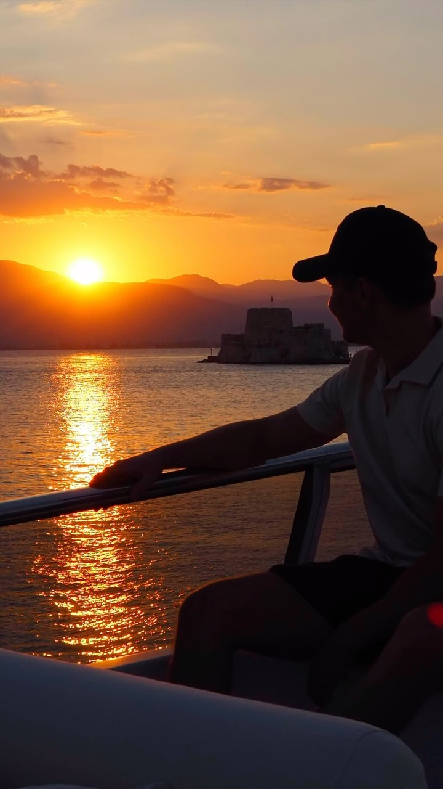
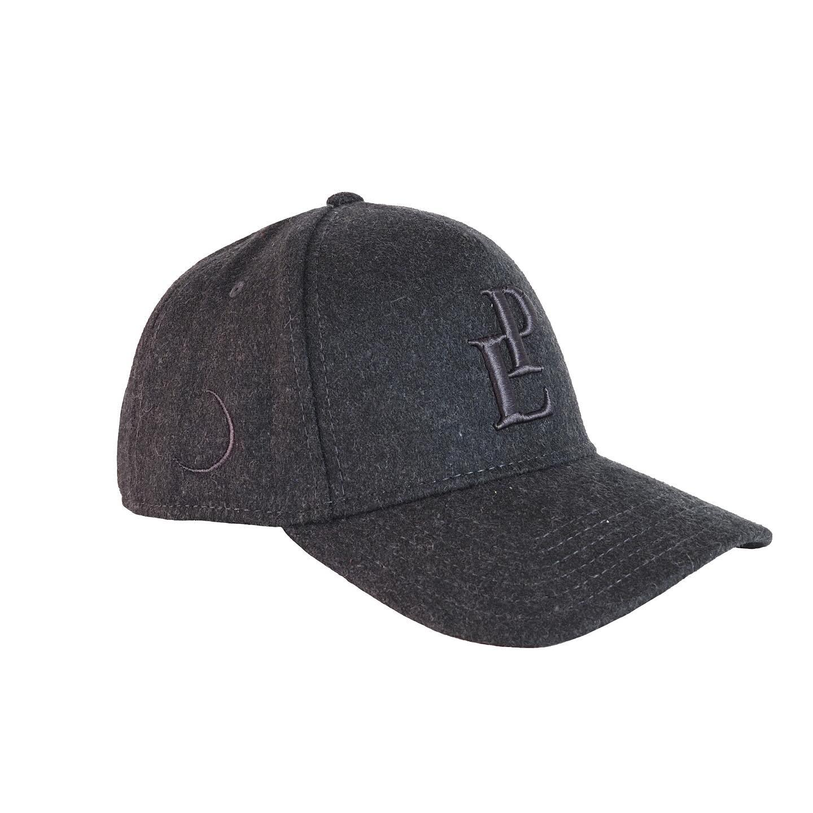
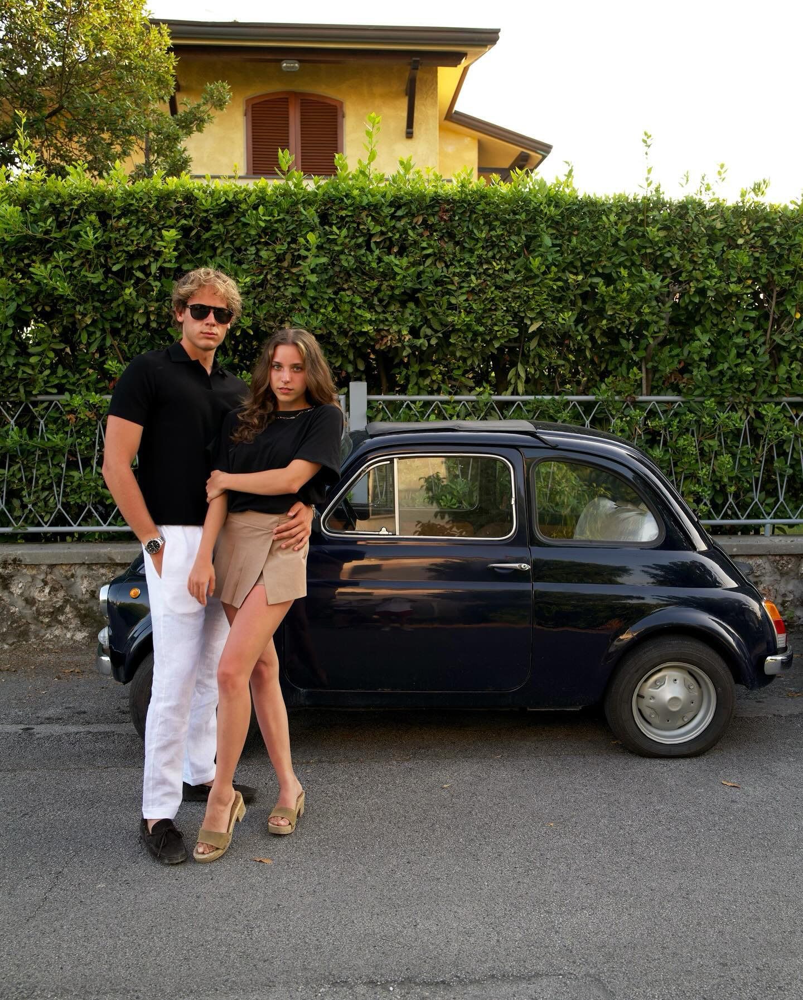
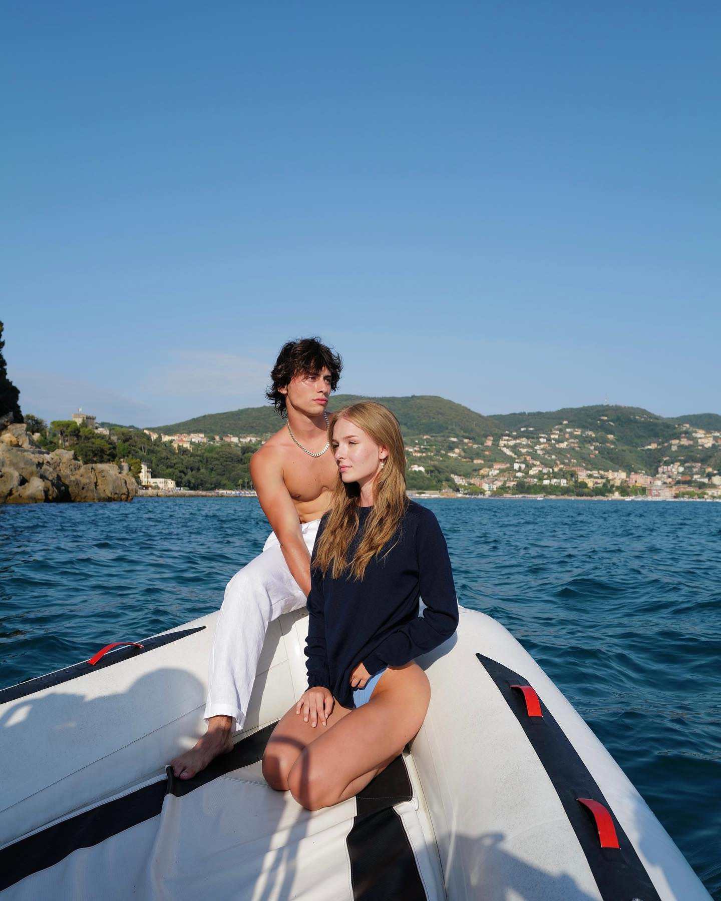
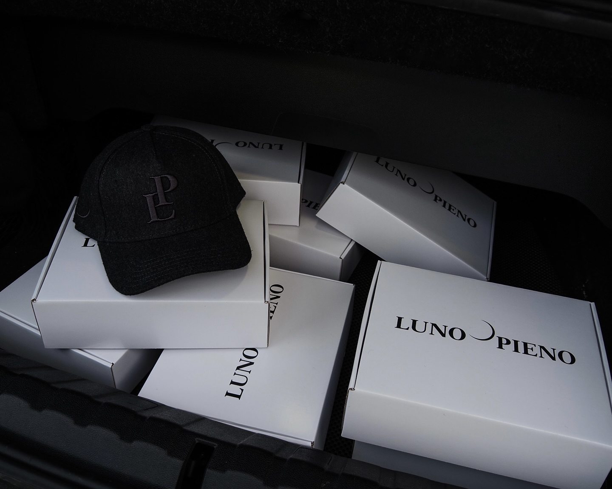
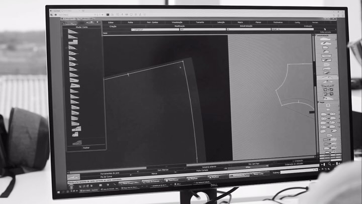

01
Essential Tee
Portugal / Cotton
CHF —LUNO PIENO / Chapter 03
Swiss precision for Mediterranean days—and everything that happens after sunset.
Enter the orbit ↗

09:17 / Somewhere south
Not a collection built for occasions. A wardrobe shaped around the unplanned parts of a good life.



“Dress precisely.
Live spontaneously.”
12:00 / Permanent orbit
Three foundations designed to circle through seasons, places and years.

18:00 / Two origins
Merino developed with patience, precision and a deep understanding of touch.
Essential jersey cut, finished and packed by experienced makers in the north.



24:00 / The day continues
Clothes that move easily between worlds. Nothing loud. Nothing unnecessary. Just pieces that feel right wherever the evening leads.
Read field note 03 ↗Field notes / Ongoing
Riviera / 4 min read
Switzerland / 6 min read
Mediterranean / 3 min read
Occasional transmissions